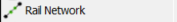
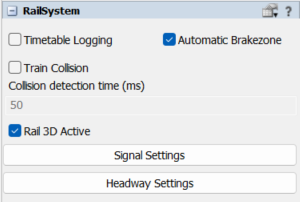

The Rail Network feature provides users with an intuitive and efficient way to design and connect railway systems. With a user-friendly interface, this tool enables seamless track placement, automatic node linking, and real-time validation to ensure smooth rail operations. Users can quickly define routes, junctions, and stations while leveraging smart snapping and alignment aids to simplify complex track layouts.
This feature is designed for both beginners and advanced users, offering powerful tools to build scalable and efficient rail networks with minimal effort.
The Rail Network will be used similar to the network node, creating connection points into the model, that allows to connect directly into other railWorks objects to create your rail network.

Now it can be found at the RailSystem GUI a new option called "Rail 3D Active" that allows users to disable the 3D visualization of rails, displaying them as simplified lines instead. This enhances clarity in complex layouts and improves performance while maintaining essential connectivity and routing information. The connectPoints are clickable when the 3D is not active, so it's easier to connect and create new RailTracks in the model.

A RailNetwork object can be dragged and dropped into the modelling 3D area to start a new rail track. With this new object, the user can simply create a new flow connection (A) to a blank space or an existing ConnectPoint of a rail, and a new rail will be created. Everytime a new RailNetwork object is added to the model, it automatically deactivates the rail 3D to make even easier to connect to the existing tracks, as shown in the video below.
ADD GIF HERE
Now with the clickables ConnectPoints they can be replaced using the coordinates
to rearrange the rails size, position and orientation inside the model.